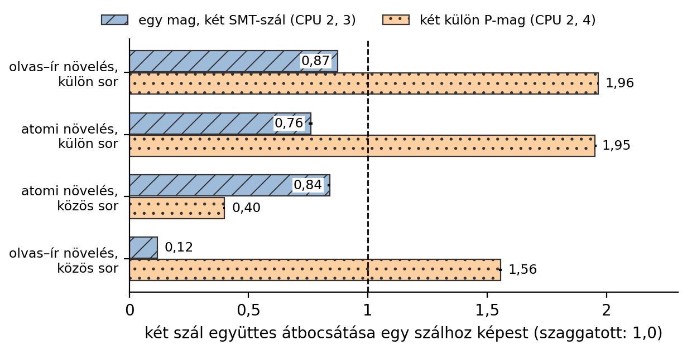
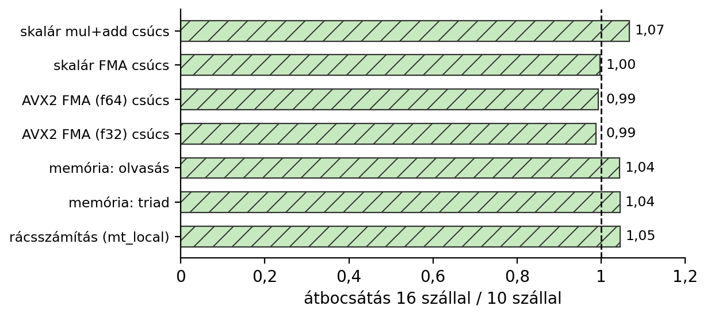
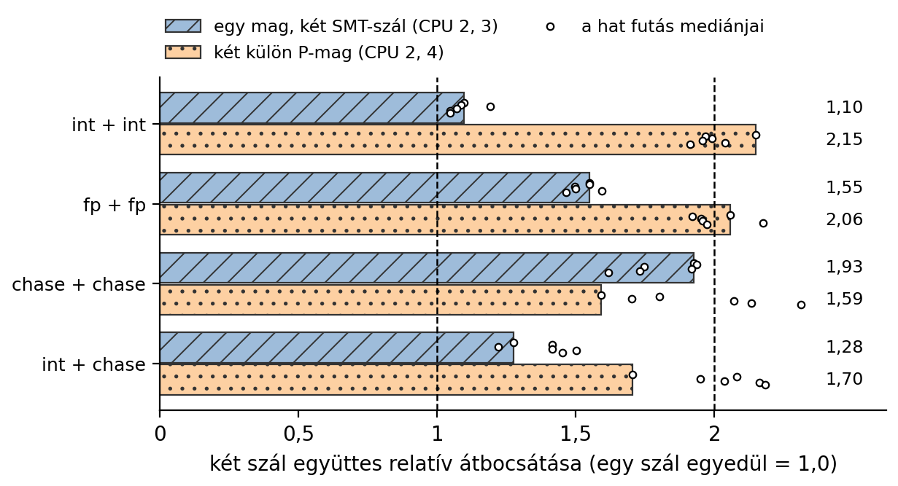

A mérőgépünkön (i5-13400F) a 2. és a 3. logikai processzor ugyanaz a fizikai mag. Két szál, mindegyik a saját számlálóját növeli, külön cache-sorban. Ha a két szál két külön magon fut, együtt 1,96-szor annyit végez, mint egy szál egyedül – szinte tökéletes skálázás. Ha viszont egyazon mag két hardverszálán futnak, együtt 0,87-szer annyit: lassabbak, mint egyetlen szál (mért adatok, 2026-11-25). Egy másik mintázatnál, amikor a két szál ugyanazt a cache-sort írja, a sorrend megfordul.
Az operációs rendszer a hardverszálat önálló processzornak mutatja, pedig nem az. A hardveres többszálúság (hardware multithreading) azt jelenti, hogy egy mag több szál architekturális állapotát tárolja, és ezek utasításait vegyíti. Leggyakoribb mai formája a szimultán többszálúság (simultaneous multithreading, SMT), Intel-néven Hyper-Threading. Ebben az alfejezetben megnézzük, mit nyer a mag ezzel, mit oszt meg a két szál, mikor gyorsít, és mikor lassít.
Az Egy modern mag anatómiája alfejezetben láttuk: egy nagy mag ciklusonként több µopot tudna kiadni, de a kiadási slotok nagy része üresen marad. Két okból:
Az ábra négy sávja ugyanannak a három szálnak (A, B, C) a futása négyféleképpen. Minden oszlop egy ciklus, minden sor egy slot. A szálak azonos színnel és betűvel jelennek meg.
Figyeld meg sorban:
Definíció. Legyen a mag szélessége , a futás ciklus, a kiadott utasítások száma . A kihasználtság ; az üres slotok száma a függőleges és a vízszintes pazarlás összege.
Többszálúságnál két mérőszámot nézünk. Az átbocsátás az összes szál együttes IPC-je. Egy szál lassulása : ennyiszer tovább tart a saját munkája a többiek mellett. A kettő gyakran ellentétes: a mag összesen többet végez, de minden szál külön lassabb.
Tegyük fel, hogy minden szál ciklusnyi számítás után ciklust vár (például a memóriára), és a mag ingyen vált. Egy szál az idő hányadában ad munkát, szál ennek -szeresét, legfeljebb 100%-ot:
A teljes kihasználáshoz tehát szál kell. Ez a Little-törvény (Egy modern mag anatómiája) más ruhában: a várakozást úgy rejtjük el, hogy közben elég független munka van folyamatban. Váltási költségnél a telítési érték 1 helyett , ahol a váltás ciklusszáma: ezért váltanak a durvaszemcsés magok csak hosszú várakozásnál.
Továbbvitt eredmény. A rejtett késleltetés többszálúsággal: ciklusos várakozást ciklusos munkaszakaszok mellett legalább szál (illetve warp) tölt ki. A GPU-k erre építenek: SIMT, warpok és divergencia.
Az SMT a sorrenden kívüli magba olcsón illeszthető, mert a regiszterátnevezés (Regiszterátnevezés, ROB és spekuláció) után a µopok egyformák: az ütemezőt nem érdekli, melyik szálból jöttek. Ami szálanként kell, az az architekturális állapot. A mai SMT-magok jellemző felosztása (a részletek gyártó- és generációfüggők, ellenőrizendő: [S-INTEL-SDM], [S-AGNER]):
| Kezelés | Erőforrás |
|---|---|
| szálanként másolt | programszámláló, architekturális regiszterek és átnevezőtábla, visszavonási állapot, megszakítási állapot |
| statikusan felosztott | ROB, load- és store-sor, egyes front-end sorok |
| dinamikusan megosztott | ütemező, fizikai regiszterek, végrehajtó portok, cache-ek, TLB, elágazásbecslő táblák |
A szálválasztási politika dönti el, melyik szál lekérése, átnevezése kap elsőbbséget. A legegyszerűbb a váltakozás; az irodalomból ismert ICOUNT a legkevesebb folyamatban lévő utasítással bíró szálat részesíti előnyben, így egy elakadt szál nem tölti tele a közös sorokat.
A felosztásnak ára van. Az előző alfejezet
archkit.window ablakmodelljében egy 512 bejegyzéses ROB-ot
kettéosztva mindkét szál 256-ot kap. Ha a hibák függetlenek és sűrűek, a
kisebb ablak majdnem megfelezi a szálankénti IPC-t, és a két szál együtt
alig végez többet. Mutatókövetésnél viszont az ablak mérete közömbös,
ezért két szál duplán halad. A számokat a Kód rész futtatja.
Két szál, 2 slotos mag. A szál: 2 utasítás, 1 utasítás, 5 ciklus
várakozás, 2, 2 ("2 1 s5 2 2"). B szál: 1, 2, 1, 1 ciklus
várakozás, 2, 1 ("1 2 1 s1 2 1"). Mindkettő 7 utasítás. Egy
szám azt jelenti, hogy ennyi független utasítás indítható; a következő
csoport leghamarabb a következő ciklusban jöhet.
Egyedül: A a 1., 2. ciklusban ad ki, a 3–7. ciklusban vár, a 8. és 9. ciklusban befejez: 9 ciklus. B: 1., 2., 3., (4. vár), 5., 6.: 6 ciklus. Egymás után 15 ciklus, IPC .
Durvaszemcsés (váltás 1 ciklus, váltás csak legalább 4 ciklusos várakozásnál): A az 1–2. ciklusban fut; a 3. ciklusban 5 ciklus várakozás látszik, tehát váltás (a 3. ciklus üres). B a 4–6. ciklusban fut, a 7. ciklusban 1 ciklus várakozás – ez rövid, nincs váltás. B a 8–9. ciklusban befejez; a 10. ciklus váltás, A a 11–12. ciklusban végez: 12 ciklus.
SMT (prioritás ciklusonként váltakozik, az 1. ciklusban A az első):
| Ciklus | Elsőbbség | Slot 0 | Slot 1 | Megjegyzés |
|---|---|---|---|---|
| 1 | A | A | A | A betölti mindkét slotot |
| 2 | B | B | A | B 1 utasítása, A 1 utasítása |
| 3 | A | B | B | A vár (a 8. ciklusig) |
| 4 | B | B | – | B következő csoportja 1 utasítás |
| 5 | A | – | – | mindkettő vár |
| 6 | B | B | B | |
| 7 | A | B | – | B kész |
| 8 | B | A | A | |
| 9 | A | A | A | A kész |
9 ciklus, IPC . A lassulás: A-ra , B-re . Az egymás utáni futtatáshoz képest az átbocsátás -szeres.
Az archkit.smt modul mind a négy politikát szimulálja.
(A . üres slot.)
import sys; sys.path.insert(0, "code")
from archkit import smt as S
A = S.parse_thread("2 1 s5 2 2")
B = S.parse_thread("1 2 1 s1 2 1")
alone = [S.simulate([t], width=2, policy="single").cycles for t in (A, B)]
for pol in S.POLICIES:
r = S.simulate([A, B], width=2, policy=pol, switch_penalty=1)
slow = ", ".join(f"{n} {f / a:.2f}" for n, f, a in zip("AB", r.finish, alone))
extra = "" if pol == "single" else f" lassulás: {slow}"
print(f"{pol:6s} {r.cycles:2d} ciklus, IPC {r.ipc:.2f}, üres {r.vertical}+{r.horizontal}"
f"{extra}")
print(S.simulate([A, B], width=2, policy="smt").picture())single 15 ciklus, IPC 0.93, üres 12+4
coarse 12 ciklus, IPC 1.17, üres 6+4 lassulás: A 1.33, B 1.50
fine 10 ciklus, IPC 1.40, üres 2+4 lassulás: A 1.11, B 1.33
smt 9 ciklus, IPC 1.56, üres 2+2 lassulás: A 1.00, B 1.17
ciklus 123456789
slot 0 ABBB.BBAA
slot 1 AAB..B.AAAz „üres” oszlop a függőleges + vízszintes slotok száma. A finomszemcsés a függőleges pazarlást csökkenti, a vízszinteset csak az SMT. A kihasználtsági képlet ellenőrzése (, , ingyenes váltás, 1 slot):
work = S.parse_thread("1 1 s8 " * 200)
for n in (1, 2, 4, 5, 6):
r = S.simulate([work] * n, width=1, policy="coarse", switch_penalty=0, long_stall=1)
print(f"N={n}: modell {r.ipc:.2f}, képlet {min(1, n * 2 / 10):.2f}")N=1: modell 0.20, képlet 0.20
N=2: modell 0.40, képlet 0.40
N=4: modell 0.80, képlet 0.80
N=5: modell 1.00, képlet 1.00
N=6: modell 1.00, képlet 1.00Pontosan szál tölti ki a magot. A ROB felosztásának hatása az ablakmodellben (egy szál 512 bejegyzéssel, illetve két szál egyenként 256-tal; a memória-sávszélességet a modell nem korlátozza):
from archkit import window as W
for name, P, dep in (("sűrű, független", 100, False), ("ritka", 1000, False),
("mutatókövetés", 100, True)):
one = W.simulate(width=4, window=512, miss_latency=330, miss_every=P, dependent=dep)
half = W.simulate(width=4, window=256, miss_latency=330, miss_every=P, dependent=dep)
total = min(4, 2 * half.ipc)
print(f"{name:16s} 1 szál {one.ipc:.2f} 2 szál {total:.2f} arány {total / one.ipc:.2f}")sűrű, független 1 szál 1.67 2 szál 1.75 arány 1.05
ritka 1 szál 2.18 2 szál 3.85 arány 1.77
mutatókövetés 1 szál 0.30 2 szál 0.61 arány 2.00Számításkorlátos, hibák nélküli szálaknál az arány 1,0: ugyanazon a 4 slotos szélességen osztoznak.
A mérőgépen a bench_counter távolság-módja két,
rögzített szálat futtat, mindegyik a saját számlálóját növeli – külön
cache-sorban vagy 8 bájt távolságban ugyanabban a sorban (false sharing,
A koherencia ára: ping-pong és false sharing).
„Olvas–ír” = relaxed betöltés + tárolás, „atomi” =
fetch_add (x86-on lock add). A viszonyítási
alap az egyszálú futás.
from archkit.perf import read_bench_csv
_, one = read_bench_csv("figures/data/ca058-meres.csv")
_, two = read_bench_csv("figures/data/ca058-tavolsag.csv")
cases = [("olvas-ír, külön sor", "vol64", "load_store", 64),
("atomi, külön sor", "padded64", "atomic", 64),
("atomi, közös sor", "false8", "atomic", 8),
("olvas-ír, közös sor", "vol8", "load_store", 8)]
print(" 1 szál SMT-pár (2,3) 2 mag (2,4)")
for name, v, kind, stride in cases:
t1 = next(r for r in one if r["variant"] == v and r["threads"] == 1)["median_ns_per_op"]
out = f"{name:20s} {t1:5.2f} ns"
for b in (3, 4):
t2 = next(r for r in two if (r["cpu_b"], r["kind"], r["stride_bytes"])
== (b, kind, stride))["median_ns_per_op"]
out += f" {t2:5.2f} ns {2 * t1 / t2:4.2f}x"
print(out) 1 szál SMT-pár (2,3) 2 mag (2,4)
olvas-ír, külön sor 0.20 ns 0.45 ns 0.87x 0.20 ns 1.96x
atomi, külön sor 3.93 ns 10.34 ns 0.76x 4.03 ns 1.95x
atomi, közös sor 4.02 ns 9.55 ns 0.84x 20.12 ns 0.40x
olvas-ír, közös sor 0.19 ns 3.32 ns 0.12x 0.25 ns 1.56xAz idő egy szál egy növelése; az „x” a két szál együttes átbocsátása egy szálhoz képest. (Az egyszálú alap a 0. CPU-n futott; ugyanolyan magtípus, de külön futás.)

Magyarázat, óvatosan:
Mi történik, ha a számításkorlátos programoknál bekapcsoljuk az
SMT-testvéreket? A bench_peak, bench_stream és
bench_grid méréseiben 10 szál a hat P- és négy E-magot
tölti ki, a 16 szál pedig hozzáadja a P-magok hat testvérszálát.

A sűrű FMA-ciklus semmit sem nyer; a külön szorzás + összeadás
változat 7%-ot (valószínűleg, mert egy szál nem tölti ki az összes
portot; ellenőrizendő), a memóriakorlátos mérések néhány százalékot. A
rácsszámítás 5%-a a mérési zajon belül van: a sorozat hét teljes
megismétlésében ez az arány 0,97 és 1,19 között mozgott
(ca081-ismetles.csv). Az SMT nem ad új végrehajtó egységet,
csak a meglévők lyukait tölti ki.
A code/bench/bench_smt.cpp program három kernelt futtat,
előbb egyedül, aztán párban a megadott CPU-kon: az int hat
független egész láncot (körönként 18 egész művelet és egy ugrás), az
fp hét független lebegőpontos szorzás–összeadás láncot (a
forrásban nyolc áll, de az egyik kezdőértéke fixpont, ezt a fordító
konstansnak veszi), a chase pedig véletlen mutatókövetés 64
MiB-on. A lényegi része:
// részlet: code/bench/bench_smt.cpp – egy szál futása és a kiértékelés
while (bench::elapsed_ns(start, now) < ms * 1e6) {
for (int j = 0; j < 8; ++j) {
if (kind == "int") ok = ok && chunk_int(1, N_INT) == ref_int;
else if (kind == "fp") ok = ok && chunk_fp(1.0, N_FP) == ref_fp;
else pos = chunk_chase(ring.data(), pos, N_CHASE);
++chunks;
}
now = bench::clock::now();
}
// ... a párfutások után (2,0: nem zavarják egymást, 1,0: együtt egy szálnyit végeznek):
rel.push_back(w[0].rate() / solo[index(a)] + w[1].rate() / solo[index(b)]);cat /sys/devices/system/cpu/cpu2/topology/thread_siblings_list # az SMT-pár
g++ -O2 -std=c++20 -pthread -fno-tree-vectorize -fno-tree-slp-vectorize \
code/bench/bench_smt.cpp -o bench_smt
./bench_smt --pairs 2-3,2-4 --ms 200 --reps 5A mérőgépen a főfutás (200 ms-os adagok, 7 ismétlés) mellett a teljes sorozatot még ötször megismételtük. A „relatív” oszlop a két szál együttes átbocsátása egy egyedül futó szálhoz képest, az A és B oszlop pedig azt mutatja, hogy a pár egyes tagjai az egyedüli tempójuk hányad részét érik el.
_, smt = read_bench_csv("figures/data/ca043-smt.csv")
_, reps = read_bench_csv("figures/data/ca043-smt-ismetles.csv")
key = lambda r: (r["kind_a"], r["kind_b"], r["cpu_b"])
print("kernelpár hely relatív a 6 futás A B")
for r in smt:
v = [q["median_rel_total"] for q in reps if key(q) == key(r)]
place = "SMT-pár" if r["cpu_b"] == 3 else "2 mag"
a = r["median_rate_a"] / r["solo_rate_a"]
b = r["median_rate_b"] / r["solo_rate_b"]
print(f"{r['kind_a'] + ' + ' + r['kind_b']:14s} {place:8s} {r['median_rel_total']:7.2f}"
f" {min(v):.2f}–{max(v):.2f} {a:5.2f} {b:5.2f}")kernelpár hely relatív a 6 futás A B
int + int SMT-pár 1.10 1.05–1.19 0.55 0.55
fp + fp SMT-pár 1.55 1.47–1.59 0.77 0.78
chase + chase SMT-pár 1.93 1.62–1.93 0.95 0.97
int + chase SMT-pár 1.28 1.22–1.50 0.38 0.89
int + int 2 mag 2.15 1.91–2.15 1.07 1.07
fp + fp 2 mag 2.06 1.92–2.18 0.97 1.10
chase + chase 2 mag 1.59 1.59–2.31 0.75 0.81
int + chase 2 mag 1.70 1.70–2.18 0.90 0.79
Olvasd az ábrát soronként, a kék (SMT) sávokat:
int + int: 1,10. Egy szál
független láncai a mag egész egységeinek nagy részét már egyedül
lefoglalják, a második szálnak alig marad rés; mindkét szál a saját
tempójának nagyjából a felét éri el.fp + fp: 1,55. A
lebegőpontos láncokat a késleltetés korlátozza (minden szorzás megvárja
az előző kört), ezért egy szál mellett a lebegőpontos portok egy része
üresen áll; ezt tölti ki a másik (valószínű ok, a portkiosztás
ellenőrizendő).chase + chase: 1,93.
Mindkét szál az idő nagy részében a memóriára vár, alig zavarják
egymást. Ez közel van az ablakmodell mutatókövetésre adott 2,00-ához; a
hat futásban 1,62 és 1,93 között mozgott.int + chase: 1,28. Itt a
naiv várakozás megbukik: a mutatókövetés alig használ egységet, mégis az
int szál a tempója 38%-ára esik vissza (a hat futásban
38–42%), miközben a chase 80–108%-ot ér el. Valószínű
magyarázat, hogy a várakozó szál is elfoglalja a közös előrész és a
felosztott sorok egy részét, az int ciklus pedig éppen
ezekre érzékeny; hardveres számlálók nélkül ez nyitott kérdés
(ellenőrizendő).Két külön magon az int + int és az
fp + fp 2 körül van. A 2-nél nagyobb értékek
mérési hibát jeleznek: az egyedüli viszonyítási alap a futások között is
ingadozott (az int egyedüli tempója 914–1032 millió kör/s),
valószínűleg az órajel változása miatt. A két magos chase +
chase a főfutásban csak 1,59, de a hat futásban 1,59 és
2,31 között szórt: itt a bizonytalanság nagyobb, mint a vizsgált hatás,
ebből a sorból nem vonunk le következtetést.
Ha két szál közös ütemezőn, portokon és L1-en osztozik, az egyik időzítésből következtethet a másik tevékenységére. Emiatt egyes szolgáltatók nem engednek idegen bérlőket egy mag két szálára, és egyes biztonsági beállítások az SMT-t kikapcsolják.
Továbbvitt eredmény. A megosztott magerőforrás mint mellékcsatorna: az SMT-testvérek közös portjai, sorai és cache-ei mérhető interferenciát okoznak, amely információt szivárogtathat; a védekezést a Cache-mellékcsatornák alfejezet tárgyalja.
A slot-diagram HTML-változatán (alapérték: a három szál, 4 slot, váltás 2, határ 4):
4 4 4 4. Az SMT IPC-je 2,00-ről 2,38-ra, a
finomszemcsésé 1,77-ről 2,07-re nő: melyiknek segít jobban egy várakozás
nélküli szál, és miért?taskset,
sched_setaffinity), és a topológiát a
thread_siblings_list fájlból olvasd.1 s2 2 1 és B = 2 s1 2 1 szálakat
finomszemcsés és SMT politikával. Hány ciklus?archkit.smt-vel a három alapszálra, melyik váltási határ a
legjobb 0, 2, 4 és 8 ciklusos váltási büntetésnél (határértékek: 1, 4,
8, 16). Fogalmazz meg szabályt.bench_smt-t egy
SMT-páron és két külön magon. Mérés előtt jósold meg, melyik kernelpár
nyer a legtöbbet az SMT-vel, majd magyarázd meg az eltérést.A kiadási slotok vertikális (üres ciklus) és horizontális (részben üres ciklus) pazarlását a hardveres többszálúság tölti ki: a durvaszemcsés a hosszú, a finomszemcsés a rövid várakozásokat is, az SMT egy cikluson belül több szálat is vegyít. ciklusos várakozást ciklusos munka mellett szál rejt el. SMT-ben az architekturális állapot szálanként másolt, a ROB és sorok felosztottak, a portok és cache-ek megosztottak. Mért példáinkban az SMT-pár független növeléseknél lassabb volt egyetlen szálnál (0,76–0,87), közös soros atomi növelésnél viszont jobb a két magnál. Kernelpárokon két mutatókövető 1,93-szoros, két egész szál csak 1,10-szeres átbocsátást adott. Telített portoknál vagy memóriánál az SMT alig gyorsít. Továbbvitt eredmény: a várakozást elég sok szál rejti el (a GPU-k alapelve), a megosztott magerőforrás pedig mellékcsatorna, mert az egyik szál mérhetően befolyásolja a másik időzítését.
1. feladat. Finomszemcsés: 1. A (1 utasítás), 2. B (2), 3. üres (A a 4., B a 4. ciklustól kész), 4. A (2), 5. B (2), 6. A (1), 7. B (1): 7 ciklus. SMT: 1. A + B egyik fele, 2. B másik fele, 3. üres, 4. B (2), 5. A (2), 6. A (1) + B (1): 6 ciklus.
A = S.parse_thread("1 s2 2 1")
B = S.parse_thread("2 s1 2 1")
for pol in ("fine", "smt"):
r = S.simulate([A, B], width=2, policy=pol)
print(f"{pol}: {r.cycles} ciklus")
print(r.picture())fine: 7 ciklus
ciklus 1234567
slot 0 AB.ABAB
slot 1 .B.AB..
smt: 6 ciklus
ciklus 123456
slot 0 AB.BAB
slot 1 B..BAA2. feladat. szál.
3. feladat. SMT: ; két mag: .
4. feladat. Egy szál: , IPC 2,21. Felosztva: , IPC 1,94; ketten 3,88 ≤ 4. Arány (a modell 1,77-et adott).
5. feladat.
T = [S.parse_thread(t) for t in ("3 2 s8 4 1 2 s8 3 2", "2 4 1 s1 2 3 s10 2 2",
"1 1 2 s2 3 1 1 s6 4")]
for pen in (0, 2, 4, 8):
c = [S.simulate(T, width=4, policy="coarse", switch_penalty=pen, long_stall=h).cycles
for h in (1, 4, 8, 16)]
print(f"büntetés {pen}: határ 1/4/8/16 -> {c}")büntetés 0: határ 1/4/8/16 -> [26, 29, 36, 56]
büntetés 2: határ 1/4/8/16 -> [38, 37, 44, 60]
büntetés 4: határ 1/4/8/16 -> [53, 48, 52, 64]
büntetés 8: határ 1/4/8/16 -> [85, 72, 70, 72]Ingyenes váltásnál minden várakozásnál érdemes váltani; ahogy a büntetés nő, a legjobb határ is nő. Ökölszabály: akkor válts, ha a várakozás nagyjából a váltási költségnél nem rövidebb.
6. feladat. A mérés gépfüggő. Kézenfekvő jóslat: az
int + chase pár nyer a legtöbbet, mert a
mutatókövetés alig használ portot, az fp + fp
pedig keveset, ha a lebegőpontos portok már egy szálnál telítettek. A
könyv gépén mindkét jóslat megbukott: a chase +
chase nyert a legtöbbet (1,93), utána az fp +
fp (1,55), az int + chase csak
1,28, az int + int 1,10. A magyarázat a Kód
rész felsorolásában olvasható; a tanulság, hogy az egységfoglaltság
mellett a közös előrész és a felosztott sorok is számítanak. Mindegyik
pár mellé mérd a külön magos futást is, ismételd meg a teljes sorozatot,
és közöld a futások közötti szóródást.